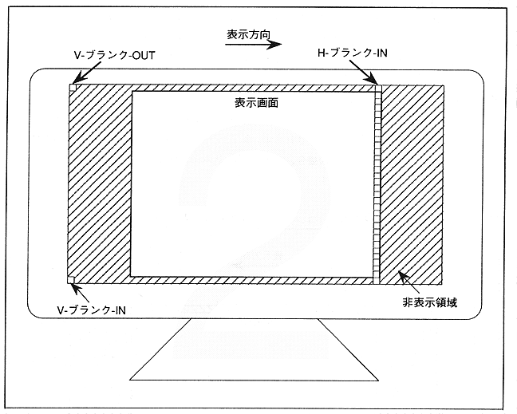

There are three types of blanking interrupts: V-blank-IN, V-blank-OUT, and H-blank-IN. Figure 2.11 shows the details of the blanking interrupt. The blanking interrupt synchronizes with the display and notifies the start and end of the display.
Figure 2.11 Blanking interrupt details
